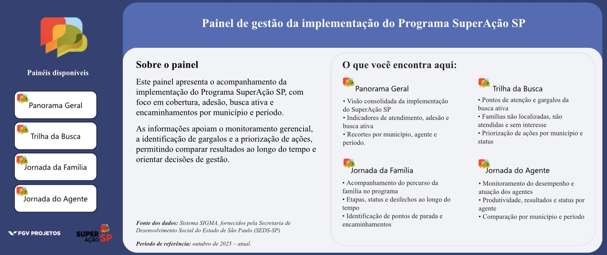
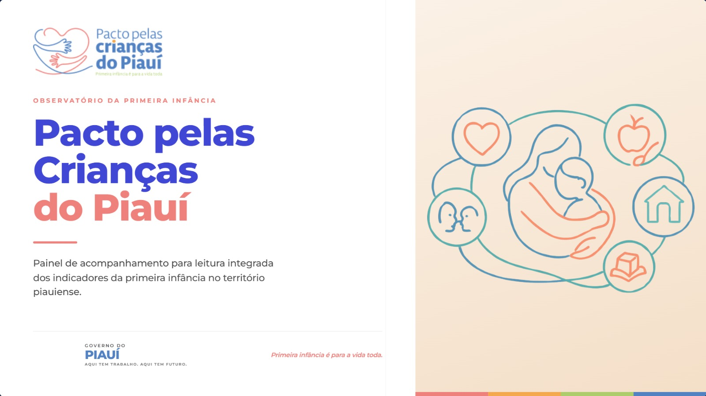
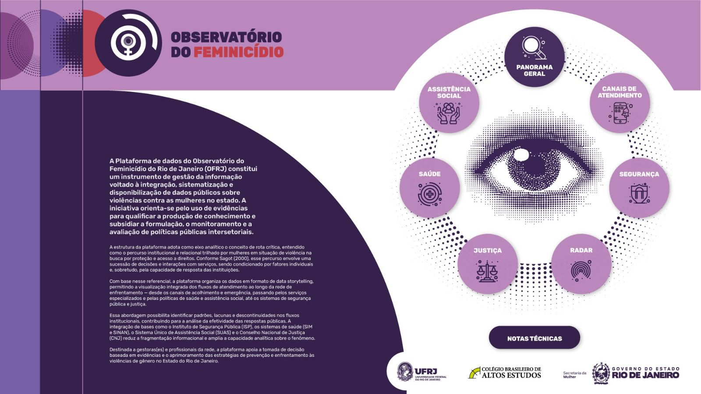

Inteligência de negócio
Entendo a demanda, o contexto e o que o negócio realmente precisa, e traduzo isso em soluções orientadas por dados.
Analista de dados · Cientista social
Entendo o que o negócio precisa e crio soluções inovadoras com dados, plataformas e IA.
Transformo dados em decisões
Arraste para girar · clique num bloco de dados
Sou cientista social de formação, licenciada pela UNIFESP, e atuo como Técnica de Projetos na FGV Projetos, desenvolvendo análises de dados, painéis e relatórios para grandes organizações.
Minha principal especialidade é entender a inteligência por trás do negócio: o que ele precisa, em que contexto está e onde os dados podem fazer diferença. A partir disso, crio soluções inovadoras com dados e plataformas tecnológicas, de painéis a produtos desenvolvidos com IA.
As Ciências Sociais me ensinaram a fazer diagnóstico: formular boas perguntas e entender o porquê das coisas no contexto em que acontecem. Os dados me permitem dar o passo seguinte: testar hipóteses a partir desse entendimento e chegar a soluções, em organizações sociais, empresas ou instituições.
Entendo a demanda, o contexto e o que o negócio realmente precisa, e traduzo isso em soluções orientadas por dados.
Formulo as perguntas certas e uso análise exploratória e estatística para testar hipóteses e embasar decisões.
Crio soluções tecnológicas, de painéis em Power BI e protótipos em Streamlit a produtos desenvolvidos com IA.
Busco e integro dados de fontes diferentes e transformo análises em narrativas claras para quem decide.
O que eu fiz, com quais ferramentas e qual diferença fez.



Análise de dados, painéis e relatórios institucionais para grandes clientes.
Primeiro painel do núcleo de primeira infância, para o curso do Protocolo Integrado de Atenção à Primeiríssima Infância, e articulação entre Saúde, Assistência Social e Educação.
Alinhamentos com gestores estaduais em torno de indicadores.
Pesquisa qualitativa com estudantes do ensino médio.
TCC sobre relações étnico-raciais e representações em obras didáticas.
Aberta a oportunidades em dados e impacto, no setor social ou privado.